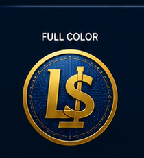

Fast. Secure. Transparent. Built on BNB Smart Chain.
View ContractLegal Dollar (LUSD) is a decentralized BEP-20 token created for fast global payments, digital commerce and blockchain innovation.
Name: Legal Dollar
Symbol: LUSD
Network: BNB Smart Chain
Decimals: 18
Initial Supply: 10,000,000 LUSD